Transform System
Panel

Independent Transform Operators:
Relax 
- Allows to reduce the stretching the faces of the island. Uses three algorithms.
- Zen Relax - The algorithm is most suitable for organic objects.
- Angle Based - Blender’s native algorithm. Most suitable for the hard surfaces objects.
- Conformal - Blender’s native algorithm. Same as Angle Based, but much faster. However, can lead to undesired results if the island is complicated.
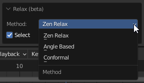
World Orient.
- Rotate Islands the way they are oriented on the Models. Each method (Organic/Hard Surface) uses a heuristic approach and correctly orients most of the Islands in its area.

- Method: Hard Surface / Organic - The orientation method is suitable for geometry types.
- Further orient - Additional turn. Allows you to turn the island to a horizontal or vertical if the island is located at an angle in the model.
- Flip By Axis - Allow changing direction of the island after basic orientation. Suitable if needed change orientation from legs to head for example.
Randomize.
- Randomize the position, rotation, and scale of the islands or selected vertices.
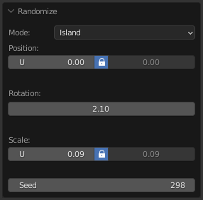
Quadrify Islands 
Straighten rectangular-shaped Islands.

Preferences
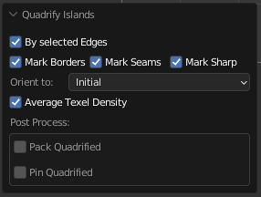
- By selected Edges - Selected Edges will be used and marked as Seams during Quadrify Islands operation. Works only in edge selection mode. 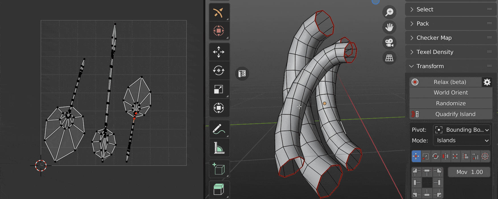
- Mark Borders - Mark borders as seams/sharp after Quadrify Island operation.
- Mark Seams - Mark seam in case Mark Borders is on.
- Mark Sharp - Mark sharp in case Mark Borders is on.
-
Orient to: - How to orient Quadrified Islands.

- Initial - Leave orientation as is.
- Vertical - Set orientation vertical.
- Horizontal - Set orientation horizontal.
-
Average Texel Density - Averaging the size for the processed islands.
- Pack Quadrified - Pack Islands after Quadrify Islands operation.
- Pin Quadrified - Pin Islands after Quadrify Islands operation.

Tip
Tag Quadrified Islands as Finished to preserve them from unwrapping. It’s recommended to Tag as Finished all manually changed Islands.

Reshape Island
Changes the island’s shape depending on the preset. Here is full information about Reshape Island.
- Selected - Straighten the selected Edge Loops and relax not selected vertices.
- U Direction / V Direction - Edges is aligned in the indicated direction.
- Borders - Straighten the edges of the island in even lines according to the given parameters.
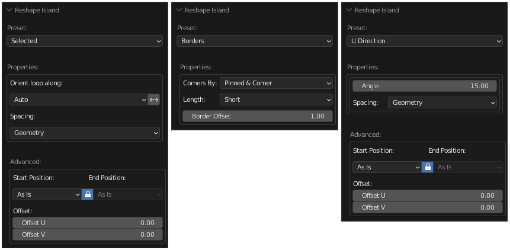
Unified Transform System:
Panel
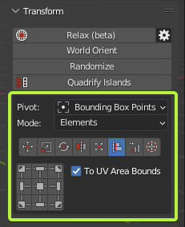
Universal Control Panel
Control
Universal Control Panel

The universal control panel has logic and different functions for different types of transformation.
Pivot.
- The pivot of transformation.

Mode.
- The Mode of transformation. In the Elements mode transformation will be performed over vertices, edges, and faces.

Transform Types:
Transform type Move. 
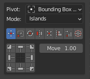
Info
- Buttons of the Universal Control Panel in the Transform type Move represent the direction of shifting.
Move Increment
- The value on which the island will be shifted.
Transform type Scale.

Info
- Buttons of the Universal Control Panel in the Transform type Scale represent Points from where the island will be scaled.
Scale Mode:

Mode - Axis.
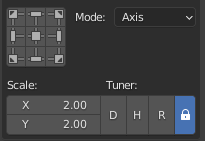
- Scale - The value of the scale of the island for each of the axes.
- Tuner - System that helps change values quickly.
- “D” - Increase by two times.
- “H” - Decrease two times.
- “R” - Reset value to 1.0 .
- Lock. - The Lock mode allows changing values as one.
Mode - Units.
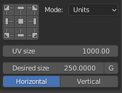
- UV Size - The estimated width of the UV area.
- Desired size - The size of which should be set for selected elements relative to UV area.
- G - Grab desired size from current selection. Exist only in the 3D Viewort context. Can be used only for 2 vertices or for one edge selection.
- Horizontal / Vertical - What mean the Desired Size.
Transform type Rotate.

Info
- Buttons of the Universal Control Panel in the Transform type Scale works as described. Buttons located in the corners rotate the island in the specified direction. The central button performs the automatic aligning of the island horizontally or vertically. The buttons at the top and bottom align the island vertically. Buttons on the left and right align the island horizontally.
Rotate Increment
- The value on which the island will be rotated.
Orient by selected
- Reorient the island by selected elements (vertices, edges, polygons).
Transform type Flip. 
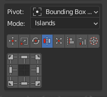
Info
- Buttons of the Universal Control Panel in the Transform type Flip represent flip direction.
Transform type Fit. 
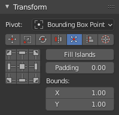
Fit island to UV Square.
Info
- Buttons of the Universal Control Panel in the Transform type Fit represent origins from where Fit will be performed.
Fill Islands
- Fit Islands from Center without keeping proportions.
Padding
- Clearance between island and UV Square bounds.
Bounds
- It makes it possible to fill out not UV Square but any other area.
Fit into Region.
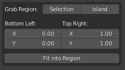
- Grab Region: Selection / Island - Allow to grab Region size in different manners.
- Bottom Left: Top Right: - The bounding box of the region.
- Fit into Region - Fit selected island in to the Region described in the bounding box.
Transform type Align.

Info
- Buttons of the Universal Control Panel in the Transform type Align represent the side by which the islands will be aligned.
To UV Area Bounds
- Allow aligning current selection to the UV Area bounds.
Transform type Distribute.

Islands Mode
- Distribute & Sort - Distributes and Sorts the selected islands.
- Arrange - Arrange the selected islands.
Elements Mode
- Distribute - Distribute vertices along the line.
Transform type 2D Cursor. 
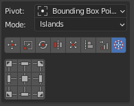
Align 2D Cursor over the selected island.
Info
- Buttons of the Universal Control Panel in the Transform type 2D Cursor represent sides of the island or selected elements.